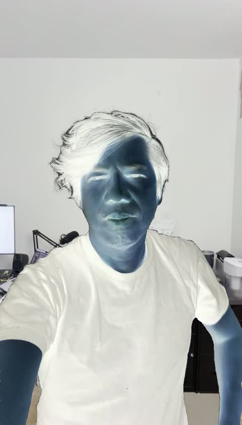
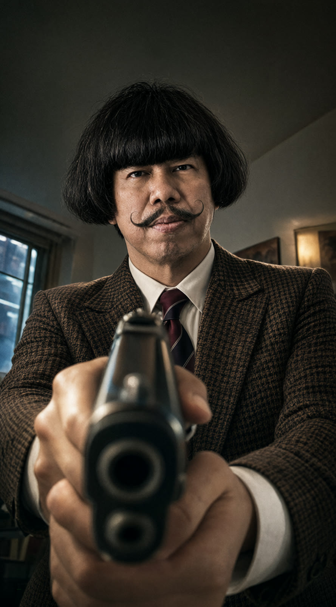

Filmmaking × performance transfer · Field report 02
Can a recorded performance survive a new camera?
One actor delivers a line. A different character performs it in another frame, under another light. After several convincing-looking failures, a scene reference finally made the difference.
Every demonstrated render has a source-face PiP and a clean version. Sound is the original recording added for evaluation. Press play to hear it.
The test was never simply to put a moustache on a talking actor. The goal was to take the actor’s delivery—the pursed lips, asymmetric squints, jaw openings, teeth and emotional escalation—and use it to direct a different character in a different shot.
That distinction became painfully clear when a technically successful render came back with the character sheet’s pale wall and flat lighting. Ko held the gun. His mouth moved. But the camera and scene had not changed enough. The result looked plausible, while missing the point of the experiment.
Keep the performance. Change the character, framing, camera angle and lighting.
This report follows the useful results and the mistakes that led to today’s lateral gunpoint shot. It is a practical visual demonstration, not a claim of mathematically exact, 1:1 facial transfer. There is no new audio-only control or landmark score for today’s shot, and the final scene was explicitly designed in a reference image.
The goal: separate acting from photography
The source is an ordinary phone recording of Maung delivering a line. The target is Ko: a bowl haircut, curled handlebar moustache, brown checked suit and burgundy tie. The desired shot has a huge near-lens handgun, wide-angle foreshortening, a low three-quarter camera and hard amber/cyan lighting in a smoky crime-film interior.
We want the actor’s facial decisions to survive without carrying over his room, T-shirt, phone viewpoint or body framing. In earlier tests we also asked the model to invent sword action, a moving train and an opponent. Those tasks exposed how easily good staging can distract from weak performance fidelity.
Yesterday: a carrier could change the camera
The earlier session built an identity-normalized “carrier”: Ko reenacts the facial performance in a simple studio. That reduces the number of competing instructions before attempting a complex scene. Test 013 added a camera pullback. Test 014 added sword movement during the same line.
Both are six-second Seedance 2.5 outputs at 480p. The camera pullback visibly changes face scale and reveals the body; the sword version raises the prop and ends in a fighting stance. The intended near-profile camera arc remains modest. These are useful carrier demonstrations, with visible differences in facial timing that the source inset makes easier to judge.
Sword action during the line
The camera pulls back
Good fight footage was not enough
Asking for identity, facial delivery, two fighters, swords, a moving train and a camera move in one pass produced coherent action. It did not consistently preserve the actor’s face performance. Mouth movement alone was a misleading success signal: the earlier H3 experiments already showed that audio could drive plausible lips without faithfully transferring eyes, brows or head attitude.
We then tried generating a fight plate first and editing the facial performance into it. This kept much of the train staging, but facial fidelity remained limited and was not established by a quantitative comparison. The examples below are retained as limited or failed performance-transfer evidence, even where the action itself looks usable.
Direct source-to-train attempt
Fight first, face second
Today’s first mistake: the wrong source take
The gunpoint experiment began with IMG_2765. An Eros H3 baseline and a seven-second Seedance run both produced playable results. The user then identified audio contamination in that take and selected IMG_2764. It is a different performance, so the two takes cannot be treated as interchangeable controls.
The historical pair below uses IMG_2765’s source inset and audio. The Seedance clip is presented over the same 155-frame interval as the H3 baseline. This is a timeline comparison, not a correction to either model’s timing. The old take is shown for the record; the accepted shot uses the clean recording.
H3 Eros baseline
First Seedance gunpoint pass
A guide needs clear ownership—and readable pixels
For H3, SAM3 identified the foreground performer and produced a target-only inverted video guide. The rest of the room remained uninverted. One early mask latched onto the wrong target; it was rejected. The reviewed clean-take mask covers roughly 43.7–47.6% of each frame and carries the visible sequence of lips, eyes and jaw.
That guide is still a source-view video. It is not a camera-independent face rig. The model must infer how to re-express its timing from the new view. Inversion is part of this tested H3 workflow; it should not be assumed to improve another model’s conditioning.
Seedance received a normal-color performance guide. Three submissions failed without returning a playable result. Removing the start image and reducing reference count did not resolve it. A plain H.264, constant-24-fps, silent proxy finally completed. This makes input normalization a plausible contributor, but the backend supplied no detailed cause: we cannot prove a codec or reference-role limit from these failures.

The render that passed technically and failed creatively
With the clean take, the requested H3 configuration was Ref2VA plus the Turbo 8-step LoRA, Euler sampler and Simple scheduler. The first completed pass carried Ko and the gun, along with a useful expression sequence. It also inherited a pale background and flat lighting from the portrait and character sheet.
The user’s correction was precise: the goal was to see the framing, camera angle and lighting change together. A finished file with a recognizable character was insufficient. We kept that pass as a rejected scene-design result.
White-sheet appearance dominates
The change that mattered: give the shot a visual reference
We first made a gunpoint image with a more cinematic room, then relit it with a hard amber key, cyan rim and smoky background. That second image was still too frontal. A third image moved the viewpoint toward a low three-quarter side view, pushed the face to the upper-right and made the gun and arms travel diagonally toward the lens.
Those are three completed still-image renders, not three H3 video attempts. The frontal relight was never submitted as its own H3 video. The side-view image became Picture 1, the primary scene reference, while the sheet became Picture 2, an identity and wardrobe backup. The prompt explicitly assigned the source video only facial timing and delivery.

The final H3 run kept the clean source, reviewed guide, seed 100403, eight steps and Euler / Simple recipe. It changed the primary image reference and the reference-role prompt together. That matters when interpreting causality: this is a practical correction, not an isolated ablation proving that reference order alone caused the improvement.
What today’s successful shot actually shows
The final result holds the oblique body view, offset face, large near-lens muzzle, amber key and cyan edge against a dark interior. Across that new staging, it follows the broad source sequence: compressed lips, small vowels, squints, a late wide-open mouth and teeth peak, then the grimacing release. The source inset makes these changes inspectable rather than asking the reader to remember them.
This is the strongest visual result in today’s session. It demonstrates that a scene-matched reference can carry substantial camera and lighting changes while the performance video still contributes changing facial behavior. It does not establish exact correspondence of every blink, gaze, cheek deformation or phoneme. Nor is the apparent camera angle a calibrated 3D reconstruction; the 35–45° language describes the intended look.
The lateral H3 shot
Seedance versus H3: show the difference, keep the caveat
The normalized Seedance retry improved markedly over its first gunpoint attempt. It has warm/cyan separation, stable Ko identity and a clearer small-vowel-to-open-mouth escalation. It remains mostly frontal. H3’s final pass follows the supplied lateral scene design more strongly.
Both use the clean IMG_2764 performance, but they did not receive equivalent controls. H3 received the inverted actor guide and the lateral scene image; the completed Seedance job received a normal-color proxy, sheet, portrait and a stricter expression prompt. It had no accepted lateral scene-image input. Seedance generated six seconds at 480p; this comparison presents its first 136 frames against the 136-frame H3 delivery without speed changes.
We can compare the practical outcomes of these workflows. We cannot use them to declare an unconditional model winner. A controlled next test would give both models the same scene design and source interval, then add a no-performance-video control and compare matched facial channels.
Seedance with the normalized take
How many attempts did this take?
Today’s gunpoint session contains 10 video-generation submissions: five H3 and five Seedance. Five completed, four failed without a usable video, and one was interrupted when the source and recipe changed. Exporting a PiP or remuxing audio is not counted as another generation.
3 complete · 1 failed · 1 interrupted
2 complete · 3 failed
Qwen frame + two image edits
Not a total historical attempt count
| Model / job | Status | What happened | Wall time |
|---|---|---|---|
| The full ledger is available as JSON. | |||
The failed H3 image-anchor test at 640×1136 produced a latent shape error. Its 640×1120 retry was interrupted when the clean take superseded it. Neither has a finished video to show. The accepted final uses semantic scene-image conditioning and zero native Add Guide image nodes.
The three failed Seedance jobs are recorded even though there is no image evidence to play. Their exact backend causes and refund status were not returned. We therefore do not infer total credit spend. Yesterday’s Test 015 receipt records five completed 18-credit jobs, or 90 credits for that branch only; it is not a project-wide bill.
Open the earlier session’s 19 completed job records
This is a returned completed-history list, including repeated or stale-state results. Job prompts sometimes describe the requested configuration rather than the actual output; the local reviewed files remain the authority.
Download attempt IDs and provenance · Download media hashes and alignment manifest
The recipe, and what remains open
The accepted local configuration used minimax_h3_ref2va_pruned_int8_convrot with minimax_h3_ref2v_turbo_8step_v1.0_768p_comfyui_bf16 at strength 1.0; Euler, Simple, eight steps; seed 100403; 640×1120; 24 fps. The text encoder was Qwen3-VL 32B H3 NVFP4 AWQ, with the H3 INT8 ConvRot video VAE and FP32 audio VAE.
The clean source normalized to 136 frames. H3 used 141 frames internally and delivered only the original interval. We retained the earlier continuous audio by copying its AAC packets into the final MP4. Matching packet hashes verify audio preservation, not facial-performance fidelity. The public clean and PiP copies are presentation encodes of the picture; the audio is copied.
The useful change was to design the final shot in a still and use that reference to tell the video model what the new camera should see. The next test should measure how much facial timing survives that transfer, especially gaze, blinks and asymmetric tension, with equivalent inputs and an audio-only baseline. Today’s result is a useful shot and a clearer experiment—not yet a general solution for arbitrary stunt, identity and camera combinations.
Alignment policy: source time zero, no dynamic time warping, no output-specific offset search, no lip-sync correction. Six-second carrier examples include the short padded tail used in those tests. Historical old-take examples retain the old recording and its known audio contamination. New-source examples use the clean take. No additional model generations were made to prepare this article.
References: earlier visual notebook; original project goal; earlier measurements. Findings here are based on the saved run records and visible comparisons, rather than vendor performance claims.